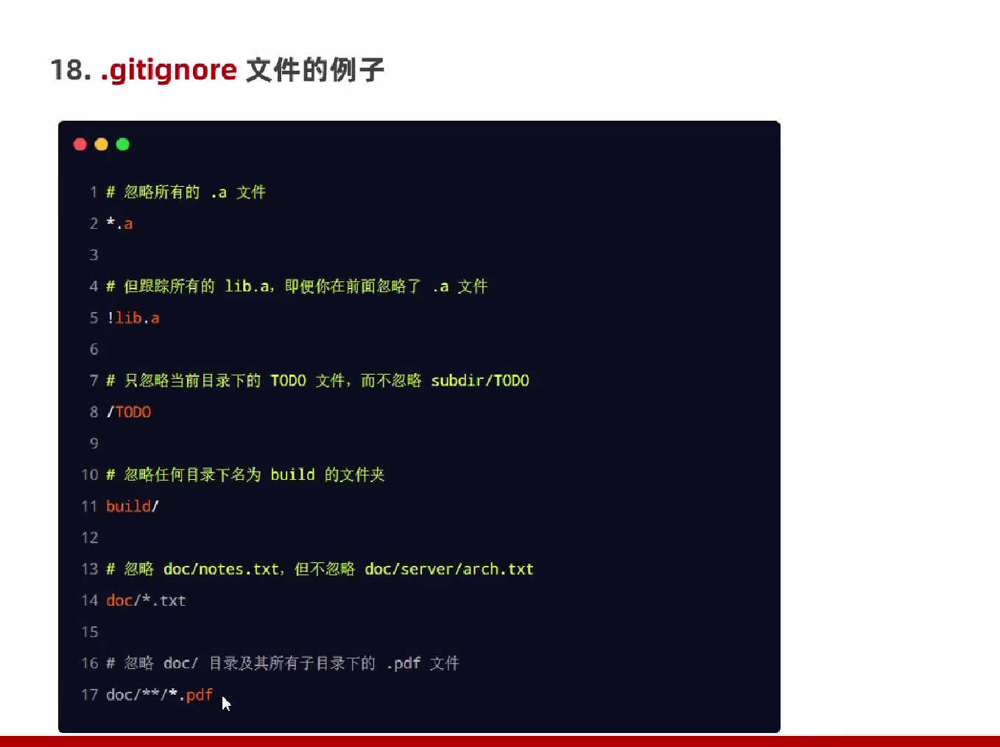

Git的基本使用
- 1.初始化仓库： -- git init
- 2.检查文件状态： -- git stayus -- -- git status -s (精简版)
- 3.跟踪文件状态： -- git add + 文件名
- 4.提交更新： -- git commit -m "新建了XXX文件" <--描述
- 5.暂存已修改文件： -- git add
- 6.撤销文件的修改： -- git checkout -- + 文件名
- 7.添加多个文件到暂存区： -- git add .
- 8.把文件移除暂存区： -- git reset HEAD + 要移除的文件
- 9.跳过暂存区，直接存仓库： -- git commit -a -m + "描述信息"
- 10.仅仓库移除文件： -- git rm -- cached + 移除的文件名
- 11.工作区和仓库同时移除文件： -- git rm - f + 移除的文件名
- 
- 13.查看提交历史： -- git log
- 14.退回指定历史版本：